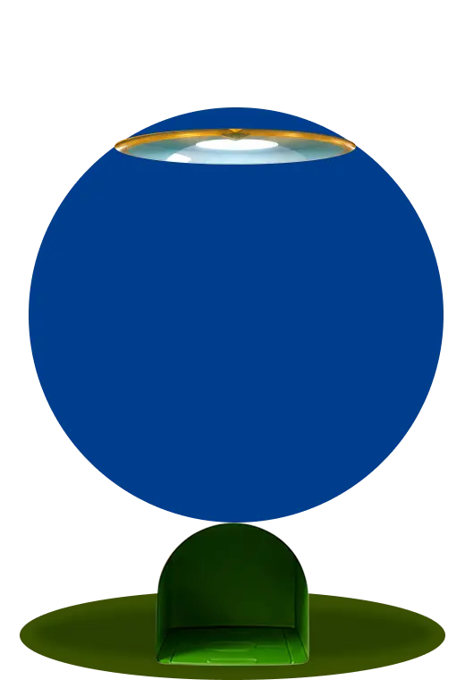
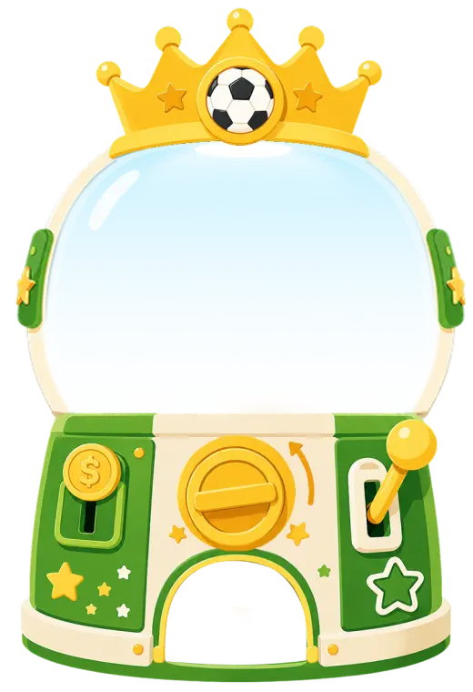

<main class="wc-page lottery-page">
  
  <section class="machine" aria-label="幸运扭蛋机">
    
    <div class="capsules" aria-hidden="true">
      
      
      
      
    </div>
    
  </section>
  <section class="result-pop" aria-label="抽奖结果未中奖">
    <h1>未中奖</h1>
    <p>继续为球队助威，下一次幸运可能就会来到。</p>
    <div class="two-actions"><button class="white-btn">下次再说</button><button class="yellow-btn">继续抽奖</button></div>
  </section>
</main>
